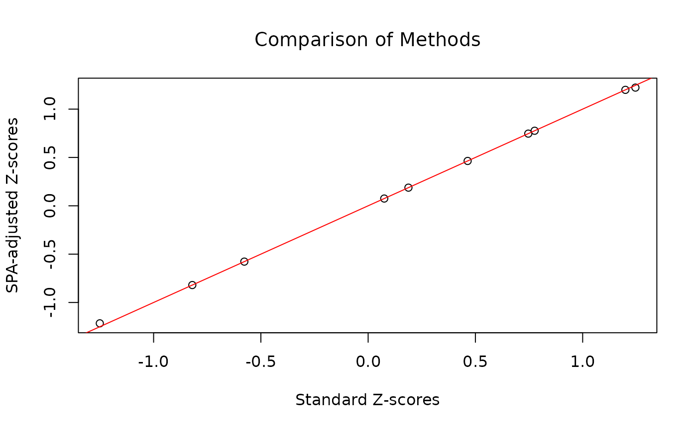
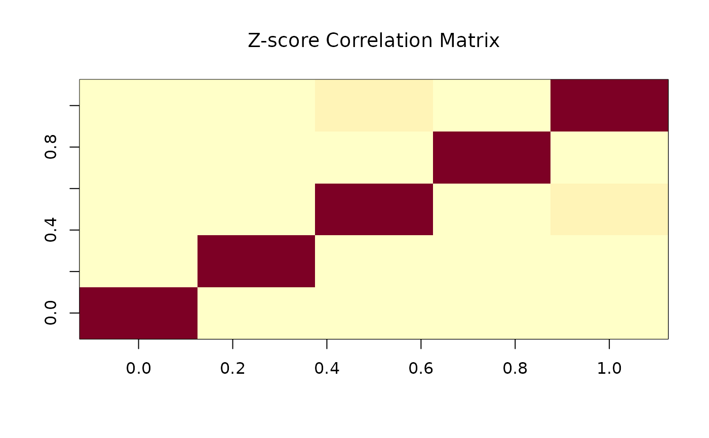

R/getZ_marg_score.R
getZ_marg_score_binary_SPA.RdCalculates the saddlepoint approximation (SPA)-adjusted standardized marginal score statistics for each variant under a logistic regression model for binary traits. This function is particularly important for handling rare variants and unbalanced case-control data where standard asymptotic p-values may be inflated.
The SPA method provides more accurate p-values than the standard normal approximation, especially when:
Minor allele frequencies are very low (< 1%)
Case-control ratios are highly unbalanced
Sample sizes are moderate
getZ_marg_score_binary_SPA(G, X = NULL, Y = NULL, null_model = NULL)A numeric matrix of genotypes (n x p), where n is the number of individuals and p is the number of SNPs. Each column represents a variant coded as 0, 1, or 2 (number of minor alleles). Missing values (NA) are not allowed.
A numeric matrix of covariates (n x k), where k is the number of covariates.
Required if null_model = NULL. Ignored if null_model is provided.
Should NOT include an intercept column; the function adds it automatically.
A numeric vector of binary response variable (length n). Must be coded as
0 (controls) or 1 (cases). No missing values allowed.
Required if null_model = NULL. Ignored if null_model is provided.
Optional. A binary trait null_model object from fit_null_model().
If provided, the function reuses the pre-computed null model, dramatically improving
performance for repeated calls with different SNP sets. When null_model is
provided, X and Y are ignored. Default is NULL
(standard mode - fit null model from X and Y).
Note: Must be a binary trait null_model (from fit_null_model(..., trait = "binary")).
A list with the following components:
Numeric vector (length p) of SPA-adjusted standardized marginal score statistics (Z-scores) for each variant. These account for the discrete nature of genotypes and provide better Type I error control for rare variants.
Numeric vector (length p) of marginal score statistics \(S_j = G_j'(Y - Y_0)\). These are the raw (unstandardized) association signals. Note: unlike the standard method where \(Z_j = S_j / \sqrt{M_{s,jj}}\), the SPA Z-scores are derived from SPA-adjusted p-values: \(Z_{SPA,j} = \Phi^{-1}(1 - p_{SPA,j}/2) \cdot sign(S_j)\). The scores are returned for completeness and diagnostic purposes.
Numeric matrix (p x p) giving the correlation matrix of Z-scores when effects are fixed (including H0), given X and G fixed. Identical to non-SPA version.
Numeric matrix (p x p) giving the covariance matrix of score statistics when effects are fixed (including H0), given X and G fixed.
Numeric scalar equal to 1 (dispersion parameter for binary traits with canonical logistic link).
Algorithm Overview:
The function implements the following steps:
Null Model Fitting: Fit logistic regression under the null hypothesis (no genetic effect): $$\text{logit}(P(Y=1)) = X\beta$$ where \(X\) is the covariate matrix. Obtain fitted probabilities \(Y_0 = P(Y=1|X)\).
Residual Genotype Calculation: Compute genotypes adjusted for covariates: $$G_{\text{scale}} = G - X(X'VX)^{-1}X'VG$$ where \(V = \text{diag}(Y_0(1-Y_0))\) is the variance matrix.
Score Statistics: Calculate score statistics for each variant: $$S_j = G_{\text{scale},j}'Y$$ where \(G_{\text{scale},j}\) is the j-th column of \(G_{\text{scale}}\).
SPA-Adjusted P-values: For each variant, apply the saddlepoint approximation to obtain p-values that account for the discrete nature of genotypes and the skewness of the score statistic distribution. Uses the "fastSPA" method from the SPAtest package, which employs a partially normal approximation for improved efficiency with rare variants.
SPA-Adjusted Z-scores: Convert SPA p-values to Z-scores while preserving the direction of effect: $$Z_{\text{SPA},j} = \Phi^{-1}(1 - p_{\text{SPA},j}/2) \cdot \text{sign}(S_j)$$ where \(\Phi^{-1}\) is the inverse standard normal CDF.
Correlation Structure: Compute the correlation matrix \(M_Z\) and covariance matrix \(M_s\) using weighted genotypes: $$\tilde{G} = \sqrt{Y_0(1-Y_0)} \cdot G$$ $$M_s = \tilde{G}'(\tilde{G} - H^{1/2}{H^{1/2}}'\tilde{G})$$ where \(H^{1/2} = \tilde{X}(\tilde{X}'\tilde{X})^{-1/2}\) with \(\tilde{X} = \sqrt{Y_0(1-Y_0)} \cdot X\).
Saddlepoint Approximation (SPA):
The SPA method provides a more accurate approximation to the null distribution of the score statistic by using the cumulant generating function (CGF). For a score statistic \(S\), the SPA approximates the tail probability as:
$$P(S \geq s) \approx \Phi(\hat{w} + \frac{1}{\hat{w}}\log(\frac{\hat{u}}{\hat{w}}))$$
where \(\hat{w}\) and \(\hat{u}\) are derived from the CGF and its derivatives evaluated at the saddlepoint. The "fastSPA" method uses a hybrid approach:
For common variants: uses standard normal approximation
For rare variants: uses full SPA correction
Cutoff determined by "BE" (Bonferroni-equivalent) threshold
Mathematical Properties:
SPA-adjusted p-values are more accurate than asymptotic p-values for rare variants
The correlation structure \(M_Z\) is identical to the non-SPA version
Only the marginal Z-scores are adjusted; the correlation remains based on variance
Dispersion parameter \(s_0 = 1\) for binary traits (canonical link)
Computational Complexity:
Time: \(O(n \cdot p \cdot k + p \cdot k^2 + p \cdot t_{\text{SPA}})\) where \(t_{\text{SPA}}\) is the SPA computation time per variant
Space: \(O(p^2 + n \cdot p + n \cdot k)\)
The "fastSPA" method is optimized for large-scale GWAS with many rare variants
When to Use SPA vs. Standard Method:
Use SPA when: MAF < 1%, case-control ratio < 0.1 or > 10, or moderate sample size (n < 5000)
Standard method acceptable when: MAF > 5%, balanced design, large sample size (n > 10000)
SPA adds computational cost but provides Type I error control for rare variants
Dey, R., Schmidt, E. M., Abecasis, G. R., and Lee, S. (2017). A fast and accurate algorithm to test for binary phenotypes and its application to PheWAS. American Journal of Human Genetics, 101(1), 37-49. doi:10.1016/j.ajhg.2017.05.014
Zhou, W., Nielsen, J. B., Fritsche, L. G., et al. (2018). Efficiently controlling for case-control imbalance and sample relatedness in large-scale genetic association studies. Nature Genetics, 50(9), 1335-1341. doi:10.1038/s41588-018-0184-y
Zhang, H., Liu, M., Landers, J. E., and Wu, Z. Integrated Weighted Association Test with Application to Genetic Association Studies. Annals of Applied Statistics (in revision).
getZ_marg_score for the standard (non-SPA) version suitable for
common variants and balanced designs.
ScoreTest_SPA for details on the SPA implementation.
# Example 1: Balanced case-control with common and rare variants
set.seed(123)
n <- 500
p <- 10
# Generate genotypes with varying MAF
G <- matrix(0, n, p)
for (j in 1:p) {
maf <- 0.05 * j / p # MAF from 0.005 to 0.05
G[, j] <- rbinom(n, 2, maf)
}
# Covariates: intercept will be added automatically
X <- matrix(rnorm(n * 2), n, 2)
# Binary trait (balanced)
Y <- sample(c(0, 1), n, replace = TRUE)
# SPA-adjusted analysis
result_spa <- getZ_marg_score_binary_SPA(G, X, Y)
head(result_spa$Zscores)
#> [1] -1.2155655 1.2223858 -0.8196333 0.7761334 0.4638672 0.7464812
# Compare with standard method (for common variants, should be similar)
result_std <- getZ_marg_score(G, cbind(1, X), Y, trait = "binary")
plot(result_std$Zscores, result_spa$Zscores,
xlab = "Standard Z-scores", ylab = "SPA-adjusted Z-scores",
main = "Comparison of Methods")
abline(0, 1, col = "red")

# Example 2: Unbalanced case-control with very rare variants
set.seed(456)
n_case <- 100
n_ctrl <- 900
n <- n_case + n_ctrl
p <- 5
# Very rare variants (MAF < 0.01)
G <- matrix(0, n, p)
for (j in 1:p) {
maf <- 0.001 * j # MAF from 0.001 to 0.005
G[, j] <- rbinom(n, 2, maf)
}
# Unbalanced binary trait
Y <- c(rep(1, n_case), rep(0, n_ctrl))
# Covariates
X <- matrix(rnorm(n * 3), n, 3)
# SPA-adjusted analysis (critical for this scenario)
result_rare <- getZ_marg_score_binary_SPA(G, X, Y)
print(result_rare$Zscores)
#> [1] -1.0120530 -0.5599509 -0.1639386 0.3495514 -0.8443881
# Examine correlation structure
image(result_rare$M_Z, main = "Z-score Correlation Matrix")

# Example 3: Optimized workflow for multiple SNP sets (RECOMMENDED FOR GWAS)
# Create multiple gene sets
gene_sets_spa <- lapply(1:100, function(i) {
matrix(rbinom(n * 5, 2, runif(1, 0.001, 0.01)), n, 5) # Very rare variants
})
# Step 1: Fit null model once
null_obj_spa <- fit_null_model(X, Y, trait = "binary")
# Step 2: Reuse for all gene sets (much faster!)
results_spa_optimized <- lapply(gene_sets_spa, function(G_gene) {
getZ_marg_score_binary_SPA(G_gene, null_model = null_obj_spa)
})
#> Warning: getZ_marg_score_binary_SPA: 1 of 5 variant(s) had zero adjusted variance (e.g. monomorphic in this sample) and were set to NA.
#> Warning: getZ_marg_score_binary_SPA: 1 of 5 variant(s) had zero adjusted variance (e.g. monomorphic in this sample) and were set to NA.
#> Warning: getZ_marg_score_binary_SPA: 1 of 5 variant(s) had zero adjusted variance (e.g. monomorphic in this sample) and were set to NA.
# This is ~10-100x faster than refitting null model for each gene set